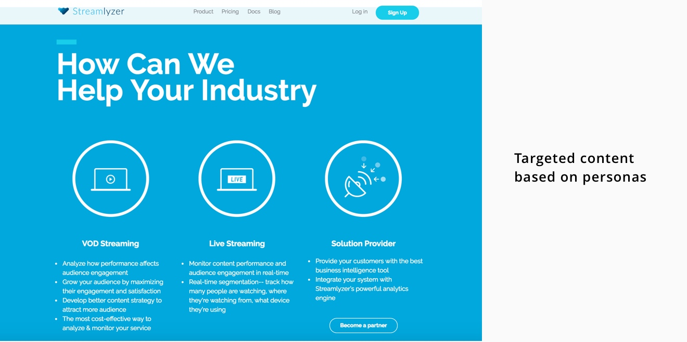
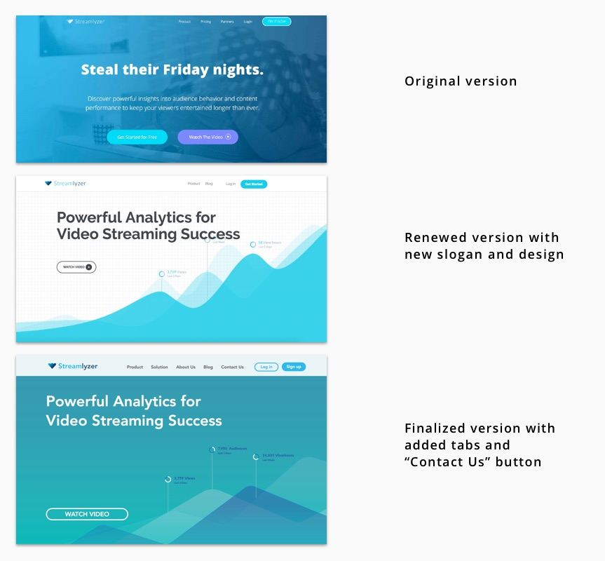
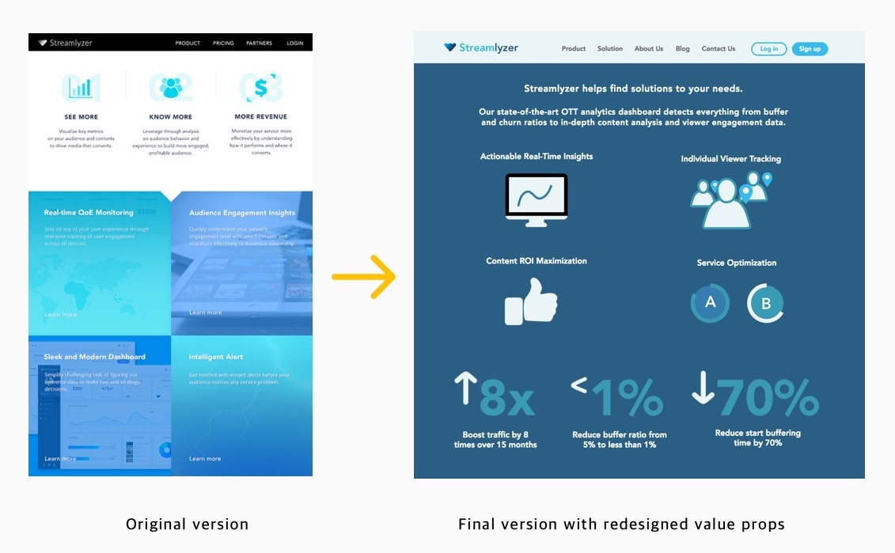

My role
I was solely responsible for designing content, navigation, and website structure. I closely worked with a UX Designer to refine visual layout of the website.
Goals & Success Metrics
- Rebranding: To give a more professional and trustworthy look to the company and clearly deliver Streamlyzer’s values to the customers. The success metrics will be increased organic traffic to the site, and stronger company awareness in the industry.
- Increase User Engagement: To increase users’ time browsing through the website and encourage them to navigate through multiple pages. The metrics measured are time spent on site, people dropping off on the first page, and the user journey.
- Increase contact rate: To increase communication with potential customers whether it is email or trial sign-up. The success metrics will be increased sign-up rate and number of customer emails.
Research Process
Personas
The first step is knowing exactly who you need to reach. I identified the types of businesses that fit our ideal client and specified their pain points, values and goals. After defining the personas, I was able to create tailored marketing message to each of the personas. Although I am not allowed to discuss the work during the process, below is the finalized website content based on the personas.
Analysis of competitor's websites
Without previous knowledge of OTT (over-the-top) content industry, I had to familiarize myself with the industry landscape by observing the competitor’s websites. Through the process, I grasped the industry-specific terms, phrases and the trends. However, the competitor’s websites felt too dry as the terms were too-technical and heavily focused on the specs. I decided to create a well-balanced website that clearly communicates the company’s value and technology in a friendly manner but still maintaining professionalism.
Website Redesign...starting from the top
Slogan and the bakground image
Before I joined the team, the company slogan was “Steal their Friday nights.” This was not only unclear of what the company does, but it also sounded unprofessional, just looked like one from Netflix. Because the purpose of the new website was to deliver product information to the visitors, I came up with three top slogans that explain the function of the product:
- "Make Real-Time Insights into Real-Time Action"
- "Powerful Analytics for Video Streaming Success"
- "Build Data-Driven Video Streaming Business"
The second slogan was chosen as the final version because it explicitly describes what the company provides with positive adjectives such as “powerful” and “success.” Also, I suggested the designer for a change in background image to a more symbolic one, emphasizing the company’s wave-like logo, which is a smart metaphor for seamless video watching.
CTA Button
Before, the company’s main lead generation strategy was to have visitors click the CTA button for free trial. However, it was not working well. After doing some research, I discovered that attracting users with “FREE” works for B2C businesses where the buyer’s decision journey is short and simple. On the contrary, Streamlyzer is a B2B enterprise software company that sells high-priced technology targeted toward a specific industry. The ones who are interested in the software would be high-level employees, such as a product manager or CTO. They would want a more genuine communication with the company to make B2B decisions which can have lots of stakeholders.
Therefore, I deleted all the “FREE” CTAs and additionally put “Contact Us” button in the navigation bar to let potential customers contact us easily and learn more about the product before signing up for a free trial.
Content strategy & Navigation
To improve readability and user experience of the website, I minimized the text and utilized the icons to deliver Streamlyzer’s value propositions in a simple and intuitive way. Additionally, I got specific metrics from the engineering team and quantified the benefit that Streamlyzer can bring to the customers.
For the new navigation bar, I deleted Pricing and Partners pages and added more tabs for more information about the company’s mission, values and technology to provide what the customers really want to know. I believed pricing and partners will be the next step in the consideration stage after learning about the product. I used targeted keywords found through Google AdWords and Ubersuggest and included educational content to increase user engagement.
Challenge
- Resource and time are always limited. This rebranding project was completely creating a new website and we had lack of front-end resources. It was impossible to finalize content, design and build in a given time frame. Therefore, we got help from website builder Wix and we were able to ship the website on time and make further changes more flexibly.
- It was a challenging task to persuade other teams about my ideas. Whether I wanted to add another page or place another button, I tried to persuade others with research studies, data and statistics and learned how to communicate myself clearly about my ideas.
- After launching the new website, it was hard to not be swayed by metrics. More traffic does not always mean success because it depends on the quality of the traffic. Also, we wished to measure the qualitative experience of the visitors but the website heatmap tool was the closest tool we could use to track user experience.
Results
Exact metrics cannot be discussed under NDA, but here are some metrics:
- The website traffic increased by 98%, which is almost the double.
- Bounce rate decreased by 13% and visitors went through at least three pages.
- There were heavily more people who showed their interest through “Contact us” button rather than directly signing up for trial.